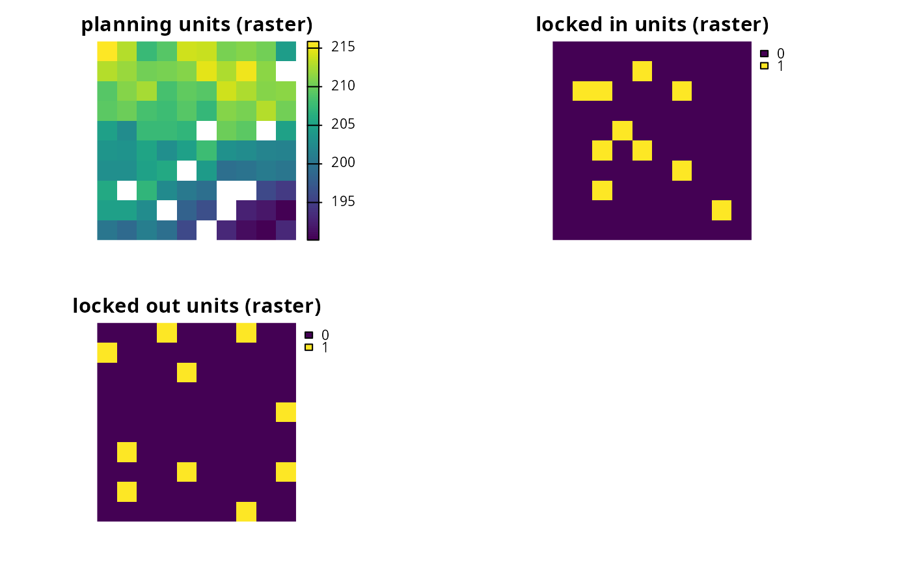
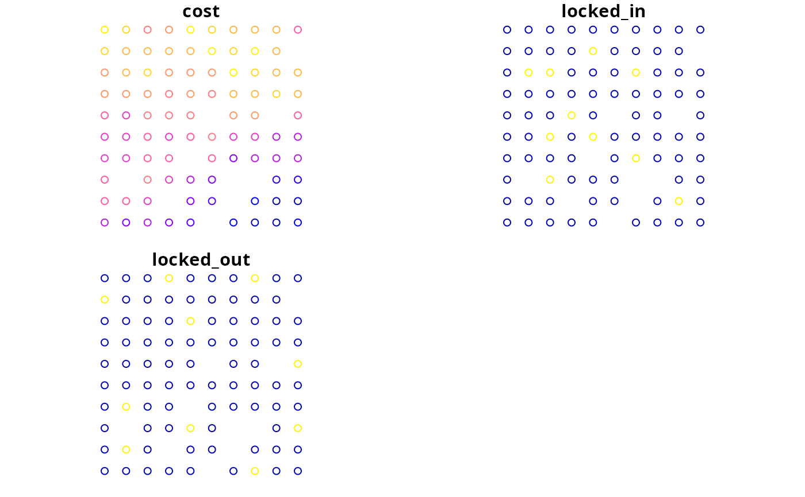
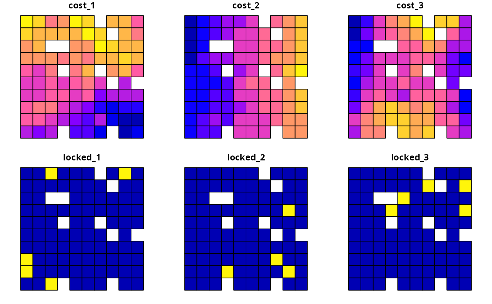

Simulated data for making spatial prioritizations.
data(sim_pu_polygons) data(sim_pu_zones_polygons) data(sim_pu_points) data(sim_pu_lines) data(sim_pu_sf) data(sim_pu_zones_sf) data(sim_pu_raster) data(sim_locked_in_raster) data(sim_locked_out_raster) data(sim_pu_zones_stack) data(sim_features) data(sim_features_zones) data(sim_phylogeny)
Format
- sim_pu_polygons
SpatialPolygonsDataFrameobject.- sim_pu_zones_polygons
SpatialPolygonsDataFrameobject.- sim_pu_sf
sf::sf()object.- sim_pu_zones_sf
sf::sf()object.- sim_pu_lines
SpatialLinesDataFrameobject.- sim_pu_points
SpatialPointsDataFrameobject.- sim_pu_raster
RasterLayerobject.- sim_pu_zones_stack
RasterStackobject.- sim_locked_in_raster
RasterLayerobject.- sim_locked_out_raster
RasterLayerobject.- sim_features
RasterStackobject.- sim_features_zones
ZonesRaster()object.- sim_phylogeny
ape::phylo()object.
Details
sim_pu_rasterPlanning units are represented as raster data. Pixel values indicate planning unit cost and
NAvalues indicate that a pixel is not a planning unit.sim_pu_zones_stackPlanning units are represented as raster stack data. Each layer indicates the cost for a different management zone. Pixels with
NAvalues in a given zone indicate that a planning unit cannot be allocated to that zone in a solution. Additionally, pixels withNAvalues in all layers are not a planning unit.sim_locked_in_rasterPlanning units are represented as raster data. Pixel values are binary and indicate if planning units should be locked in to the solution.
sim_locked_out_rasterPlanning units are represented as raster data. Pixel values are binary and indicate if planning units should be locked out from the solution.
sim_pu_polygonsPlanning units represented as polygon data. The attribute table contains fields (columns) indicating the expenditure required for prioritizing each planning unit ("cost" field), if the planning units should be selected in the solution ("locked_in" field), and if the planning units should never be selected in the solution ("locked_out" field).
sim_pu_pointsPlanning units represented as point data. The attribute table follows the same conventions as for
sim_pu_polygons.sim_pu_linesPlanning units represented as line data. The attribute table follows the same conventions as for
sim_pu_polygons.sim_pu_sfPlanning units represented as polygon data using the
sf::sf()package. The attribute table follows the same conventions as forsim_pu_polygons.sim_pu_zones_polygonsPlanning units represented as polygon data. The attribute table contains fields (columns) indicating the expenditure required for prioritizing each planning unit under different management zones ("cost_1", "cost_2", and "cost_3" fields), and a series of fields indicating the value that each planning unit that should be assigned in the solution ("locked_1", "locked_2", "locked_3" fields). In these locked fields, planning units that should not be locked to a specific value are assigned a
NAvalue.sim_pu_zones_sfPlanning units represented as polygon data using the
sf::sf()package. The attribute tables follows the same conventions as forsim_pu_zone_polygons.sim_featuresThe simulated distribution of ten species. Pixel values indicate habitat suitability.
sim_features_zonesThe simulated distribution for five species under three different management zones.
sim_phylogenyThe phylogenetic tree for the ten species.
Examples
# load data data(sim_pu_polygons, sim_pu_lines, sim_pu_points, sim_pu_raster, sim_locked_in_raster, sim_locked_out_raster, sim_phylogeny, sim_features, sim_pu_sf) # plot example Spatial-class planning unit data # \dontrun{ par(mfrow = c(2, 3)) plot(sim_pu_raster, main = "planning units (raster)") plot(sim_locked_in_raster, main = "locked in units (raster)") plot(sim_locked_out_raster, main = "locked out units (raster)") plot(sim_pu_polygons, main = "planning units (polygons)") plot(sim_pu_lines, main = "planning units (lines)") plot(sim_pu_points, main = "planning units (points)")# plot example phylogeny data par(mfrow = c(1, 1)) ape::plot.phylo(sim_phylogeny, main = "simulated phylogeny")# plot example feature data for each management zone plot(do.call(stack, sim_features_zones), main = paste0("Species ", rep(seq_len(number_of_zones(sim_features_zones)), number_of_features(sim_features_zones)), " (zone ", rep(seq_len(number_of_features(sim_features_zones)), each = number_of_zones(sim_features_zones)), ")"))# }